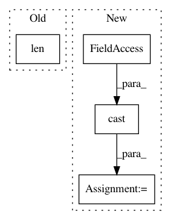

f15f59953d59ccca0fd3321d860a9768a3326941,research/object_detection/meta_architectures/center_net_meta_arch.py,CenterNetMetaArch,_rescore_instances,#CenterNetMetaArch#Any#Any#Any#,3006
Before Change
continue
class_id = kp_params.class_id
keypoint_indices = kp_params.keypoint_indices
num_keypoints = len(keypoint_indices)
kpt_mask = tf.reduce_sum(
tf.one_hot(keypoint_indices, depth=total_num_keypoints), axis=0)
kpt_mask_tiled = tf.tile(kpt_mask[tf.newaxis, tf.newaxis, :],
multiples=[batch, max_detections, 1])
After Change
visible_keypoints = tf.math.greater(keypoint_scores, 0.0)
num_visible_keypoints = tf.reduce_sum(
class_and_keypoint_mask_float *
tf.cast(visible_keypoints, tf.float32), axis=-1)
num_visible_keypoints = tf.math.maximum(num_visible_keypoints, 1.0)
scores_for_class = (1./num_visible_keypoints) * (
tf.reduce_sum(class_and_keypoint_mask_float *
scores[:, :, tf.newaxis] *
keypoint_scores, axis=-1))
In pattern: SUPERPATTERN
Frequency: 4
Non-data size: 4
Instances
Project Name: tensorflow/models
Commit Name: f15f59953d59ccca0fd3321d860a9768a3326941
Time: 2021-03-11
Author: ronnyvotel@google.com
File Name: research/object_detection/meta_architectures/center_net_meta_arch.py
Class Name: CenterNetMetaArch
Method Name: _rescore_instances
Project Name: tensorflow/cleverhans
Commit Name: 17d926283721a5b8b97610701b47256364170a39
Time: 2020-11-23
Author: joel.frank@rub.de
File Name: cleverhans/future/tf2/utils_tf.py
Class Name:
Method Name: get_or_guess_labels
Project Name: geomstats/geomstats
Commit Name: 51e58b16b173db89aaaf974cb9c0eed00d6fd52a
Time: 2018-09-27
Author: ninamio78@gmail.com
File Name: geomstats/special_orthogonal_group.py
Class Name: SpecialOrthogonalGroup
Method Name: projection
Project Name: p2irc/deepplantphenomics
Commit Name: ece4eae5b509ed74ff88c54c7d1689bbe7aeefd0
Time: 2019-09-18
Author: dbl599@mail.usask.ca
File Name: deepplantphenomics/object_detection_model.py
Class Name: ObjectDetectionModel
Method Name: _assemble_graph